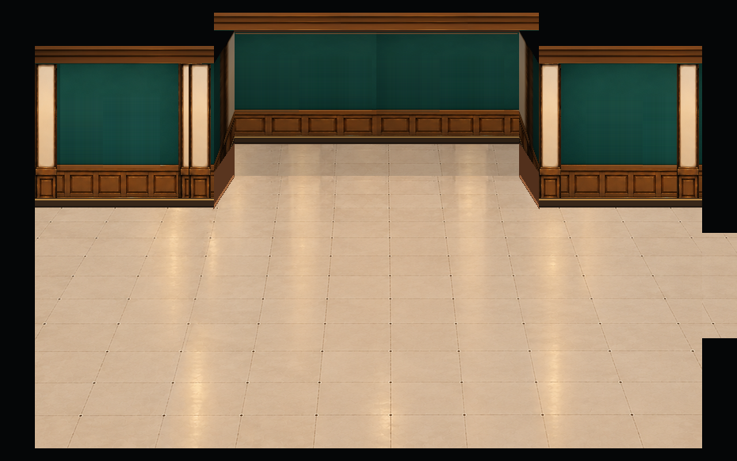
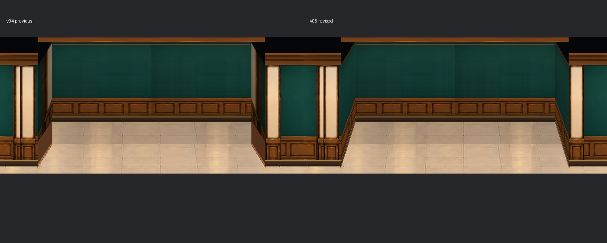

とっておき美術館 / 建築背景確認
展示室3｜凹みの左右側壁
前回v04の凹みの側壁を修正したv05です。大きな茶色の三角形をなくし、緑の壁紙と木製の腰板を奥までつなげました。

- 左右の側面を緑の壁紙と木製腰板で統一。下部の大きな茶色い三角をなくしました
- 右側の通路位置、開口サイズ、扉なしの状態はv04のまま
- 凸型の黒枠・奥行き・左右の軒・展示枠・中央下の入口は変更していません
承認済みE案の建築原本も確認できます。 建築背景のみの監修用プレビューです。奥壁3枠とハの字独立壁2枚の配置は維持。ゲームへの組み込み・通行判定は未実施です。
凹みの側面を拡大して比較

左：v04 / 右：v05